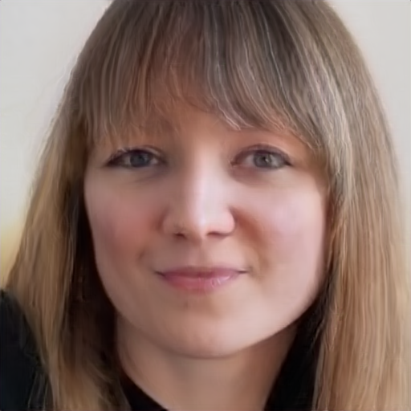

We propose a 3D-aware portrait video GAN, PV3D, which is capable to generate a large variety of 3D-aware portrait videos with high-quality appearance, motions, and 3D geometry. PV3D is trainable on 2D monocular videos only, without the need of any 3D or multi-view annotations.
PV3D is able to generate diverse videos with multi-view consistency and detailed dynamic 3D geometry.
Abstract
Recent advances in generative adversarial networks (GANs) have demonstrated the capabilities of generating stunning photo-realistic portrait images. While some prior works have applied such image GANs to unconditional 2D portrait video generation and static 3D portrait synthesis, there are few works successfully extending GANs for generating 3D-aware portrait videos. In this work, we propose PV3D, the first generative framework that can synthesize multi-view consistent portrait videos. Specifically, our method extends the recent static 3D-aware image GAN to the video domain by generalizing the 3D implicit neural representation to model the spatio-temporal space. To introduce motion dynamics to the generation process, we develop a motion generator by stacking multiple motion layers to generate motion features via modulated convolution. To alleviate motion ambiguities caused by camera/human motions, we propose a simple yet effective camera condition strategy for PV3D, enabling both temporal and multi-view consistent video generation. Moreover, PV3D introduces two discriminators for regularizing the spatial and temporal domains to ensure the plausibility of the generated portrait videos. These elaborated designs enable PV3D to generate 3D-aware motion-plausible portrait videos with high-quality appearance and geometry, significantly outperforming prior works. As a result, PV3D is able to support many downstream applications such as animating static portraits and view-consistent video motion editing. Code and models will be released.
Comparison with Baselines
StyleNeRF+MCG-HD
EG3D+MCG-HD
3DVidGen
3DVidGen (EG3D)
PV3D (Ours)
Applications
Static Portrait Animation
Input
Inversion
Animation
Multi-view

Given static portraits, we fix PV3D and optimize the intermediate appearance code to inverse input images. By sampling a random motion code, we can animate the static portraits with natural motion and synthesize portrait videos with multi-view consistency.
Monocular Video Reconstruction and Motion Editing
Input
Inversion
Multi-view reconstruction
Random motion 1
Random motion 2
PV3D provides a quick solution for 3D reconstruction on monocular videos. The motion of input videos can be manipulated by changing motion codes. The results can maintain multi-view consistency.
Motion Retargeting
Source
Target 1 (Image)
Target 2 (Video)
Based on PV3D, the motion code can be used for retargeting portrait videos of different identities.
By fixing motion code, PV3D can synthesize videos with diverse apperances but similar motions.
Long Videos Synthesis
Generated videos of PV3D trained on 48 frame clips (VoxCeleb).
Portrait Videos Samples
(a)
(b)
(c)
(d)
(e)
(f)
Samples with fine-grained motions and complex expressions.
Simultaneous Multi-view Rendering
Rndering fixed left, middle, right views simultaneously.
Citation
Anonymous. PV3D: A 3D Generative Model for Portrait Video Generation. OpenReview, 2022.
@article{anon2022pv3d,
author = {Anonymous},
title = {PV3D: A 3D Generative Model for Portrait Video Generation},
joural = {OpenReview},
year = {2022},
}
{kind=link}